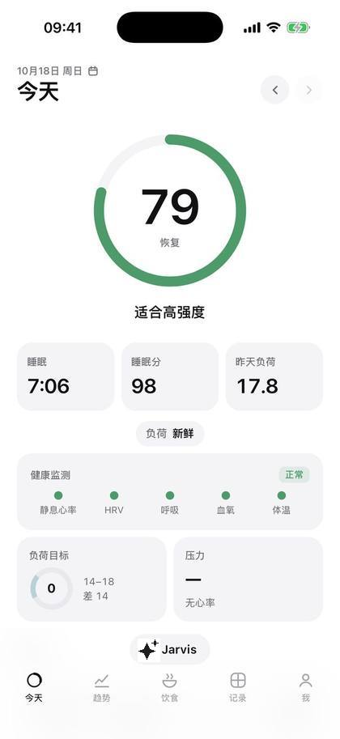
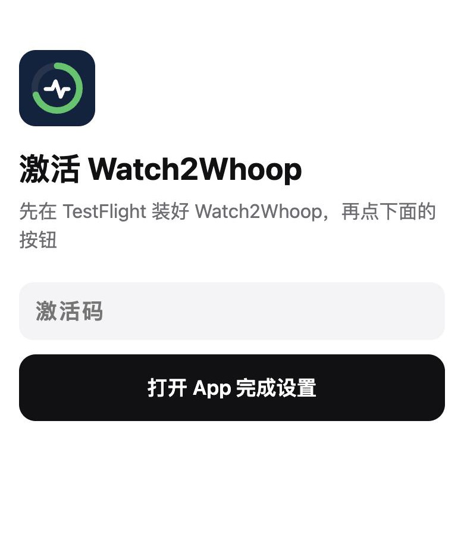
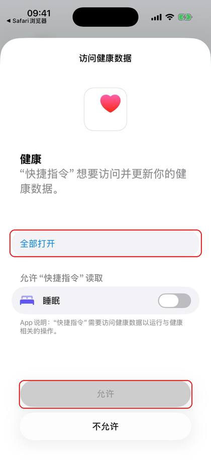
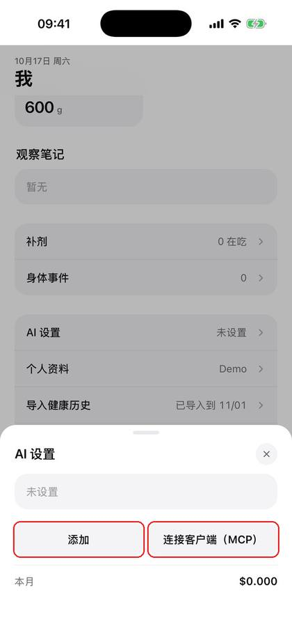
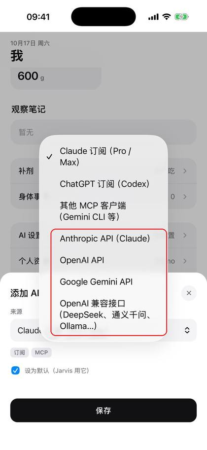
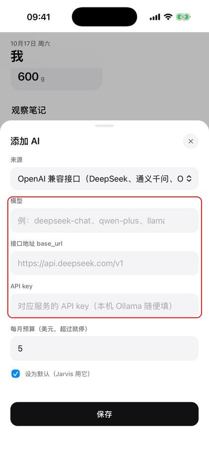

Watch2Whoop Handbook
中文 · English
Watch2Whoop is a body database for your AI. Your Apple Watch data flows in automatically and becomes recovery, sleep and strain scores; every meal, workout and lab report you mention is stored, and your AI can pull it up and analyse it at any time.
You need an AI. There are no input boxes and no "log" buttons here: what you ate, how you trained, your weight, lab reports, anything that feels off — you tell your AI, by typing, a screenshot or a photo, and it logs it for you. The pages are only for looking at charts and scores.
Screenshots in this edition still show the Chinese interface; they will be replaced with English ones once the English interface ships.

Contents
How to use: just talk to your AI
One rule: whatever you want to log or ask, say it to your AI. No buttons to find, no forms to fill in; type, speak, send a photo or a screenshot. The AI reads your data, logs things and does the maths; the pages just show the results. Haven't connected an AI yet? See "Connect your AI" first.
Here are some real-world requests. Use them as they are or in your own words.
Meals
- (photo of lunch) Log my lunch
- Breakfast: two eggs, a glass of unsweetened soy milk, a slice of wholemeal bread
- Dinner was the same as yesterday
- I only ate half the rice at that meal, fix it
- Delete the entry I just logged by mistake
- How much protein am I still short today? What should I have for dinner?
- Save "egg and oats breakfast" as a quick meal
Training
- Plan next week's training for me, 4 days a week
- My recovery is poor today, swap in something lighter
- I'm busy on Wednesday, move leg day to Thursday
- Chest today: bench press 4×8 60 kg, incline dumbbell press 3×10 20 kg
- My shoulder hurts, stop giving me overhead presses
- How many times did I train this week? Which muscle group am I neglecting?
Weight, sugar, supplements, labs
- Weight this morning 78.4
- (photo of the scale) Log this
- How much added sugar have I had today? How much is left?
- I take one fish-oil capsule and 5 g of creatine a day, add them
- I've stopped the fish oil
- (photo of a lab report) Enter these results
- How has my uric acid trended over the last few tests?
Recipes and shopping
- Suggest a few high-protein, low-fat dinners
- Log one serving of "tomato chicken pasta"
- Save this recipe: (paste the recipe)
- Make a shopping list from this week's menu
- Bought the milk and eggs, tick them off the list
- What can I cook for dinner with what's at home?
Understand your scores, plan your day
- How's my recovery today? Should I train?
- Why is my recovery score so low today?
- How did I sleep last night? When should I go to bed tonight?
- How is my body age calculated? How can I improve it?
- How much more strain can I take today?
Reviews and reports
- Give me this week's report
- Compared with last month, how have my weight and sleep changed?
- Which habits have affected my recovery the most lately?
- Note: headache this afternoon, had a coffee
Something wrong or found a bug? Ask your AI too
Not sure how something works, the data looks wrong, a number makes no sense — ask your AI first. It can see your data, so most questions get answered on the spot.
- Why is today's step count lower than on my watch?
- Why didn't last night's sleep sync?
- What does "strain" on this page mean?
- I think this is a bug: (screenshot)
If it looks like a bug, give the AI the screenshot and what happened; it will turn it into a clear description you can forward to your admin. Later the AI will report bugs to the developers directly.
Before you start
- Activation link: a link (or QR code) your admin sends to you alone. Don't forward it. It can be reused: after switching phones or reinstalling the app, just tap it again.
- TestFlight invitation email: sent to your Apple ID email address.
- An AI: see "Connect your AI".
Set up the app
① Install the app
Open the TestFlight invitation email → "View in TestFlight" → install TestFlight from the App Store as prompted → "Accept" → "Install".
② Tap the activation link
On your iPhone, tap the activation link from your admin (or scan the QR code with the camera) → "Open the app to finish setup" → when "Open in Watch2Whoop" pops up, tap "Open".

Server, health sync and Today page sign-in are all set up in one go — no codes to type.
③ Allow Health access
"Turn On All" → "Allow". Read-only; nothing is written to Health.

④ Consent
Tick the consent box → "Agree and continue" → fill in your profile → "Save".


⑤ Connect your AI
See the next section, "Connect your AI".
⑥ Wait for the first sync
The first sync pulls the last 90 days and takes a few minutes to a quarter of an hour: keep the app open and the phone unlocked. After that the app syncs in the background on its own.
⑦ Import older history (optional)
To see data older than 90 days: Health → your profile picture → "Export All Health Data" → save it to Files. In the app: "Me" → "Import health history" → "Choose file".


On a computer
Open body.example.com/app in a browser. The first time, ask your admin for a one-time computer sign-in link.
Connect your AI (the core)
Once the app is set up (steps above), tap "Me" at the bottom → "AI settings" at the very bottom. Pick one of three ways.


"Jarvis uses" at the top of "AI settings" picks which AI is active (the fallback AI is always there); you can also tap the name at the top of the chat to switch. If your own AI is disabled or deleted, Jarvis falls back to the fallback AI automatically.
Option 1: Jarvis fallback AI (the easiest)
No account to sign up for; it works as soon as it's enabled. It runs on DeepSeek, about ¥3 a month. The first time you use it, it asks whether you agree to send your body data to DeepSeek for processing; it only works after you agree.
Option 2: your own API key
"AI settings" → "Add" → under "Source" pick the provider you have a key for (for DeepSeek or Qwen choose "OpenAI-compatible API"; for a free Google AI Studio key tick "Free tier") → fill in the model, API endpoint, API key and monthly budget → "Save".


The key is uploaded once and afterwards only its last 4 characters are shown; it stops automatically when the monthly budget is used up. The Gemini free tier has request limits, so you may have to wait; on the free tier Google may also use what you send to improve its products — if that bothers you, use a paid key or another option.
Option 3: your Claude / ChatGPT / Google AI subscription
For people who use the Claude desktop app / Claude Code, Codex, or Gemini CLI / Antigravity on a computer. "AI settings" → "Add" → choose "Claude subscription", "ChatGPT subscription" or "Google AI subscription" → "Save" → "Connect a client (MCP)" → pick the client → "Generate token", then follow the 3 on-screen steps on your computer.

The token is shown only once; when you no longer need it, "Revoke" it in the same place.
Chat with Jarvis in the app
Tap "Jarvis" at the bottom of any page to start a chat. If no AI is set up yet, it points you to "AI settings".

Before writing anything, the AI asks you to confirm; nothing is logged until you do.
Three buttons next to the input box:
| Button | What it does |
|---|---|
| 📷 Photo | Take a photo or pick from the library, up to 8 at a time (meals, the scale, lab reports, watch screenshots) |
| 🎬 Video | Pick a video; up to 8 frames are extracted, and any speech in it is transcribed into the input box first |
| 🎤 Hold to talk | Hold to speak, release to transcribe (up to 60 seconds); the text goes into the input box so you can check and fix it before sending; slide up to cancel |
Speech is transcribed on the server, never sent to a third party, and the recording is deleted right after. If 🎤 does nothing, or says recording isn't available here: tap the input box and use the 🎤 dictation key on the keyboard — it works just as well.
FAQ
How do I log things? Tell your AI — see How to use: just talk to your AI. There's no input box on the pages on purpose.
Stuck at "Enter the 8-character invite code": you don't need to type it. Go back to the home screen and tap the activation link again; the app sets itself up.
The activation link doesn't open the app: first make sure Watch2Whoop is installed through TestFlight; open the link in Safari, not directly inside WeChat (in WeChat, choose "Open in browser" first).
Data isn't updating: open the app and keep the phone unlocked for a few dozen seconds; iPhone doesn't allow reading Health data while locked, and it catches up once unlocked.
Used to sync with a Shortcut: once the app syncs properly, delete the health-sync automations under Shortcuts → "Automation" to avoid duplicates and errors. The old handbook (Chinese) is here.
New phone / reinstalled the app: tap the same activation link again; your consent and profile carry over.
Privacy: only you can see your data; see the consent form for details. When you use an AI, the conversation is sent to the AI service you chose.
Export / delete your data: ask your admin.